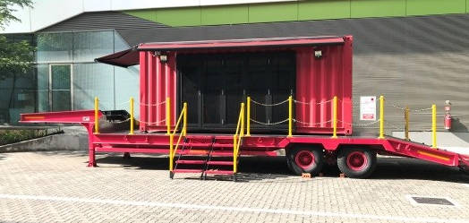

Mandatory Sessions
There are some mandatory events for all Freshmores to attend.
These events are also shaded in pink on the calendar.
| Session Name | Location | Date and Time |
|---|---|---|
| Welcome Address | Albert Hong Lecture Theatre (LT1 1.102) | 21st May, 2pm to 3pm |
| Learning Journey | Cohort Classroom | 21st May, 3pm to 5pm |
| Residential Living Info Session | Student Lounge | Check schedule |
| Residential Living Info Session | Student Lounge | Check schedule |
| Academic Matters briefing | Albert Hong Lecture Theatre (LT1 1.102) | 22nd May, 2pm to 3:30pm |
| Freshmore Inauguration Ceremony | Auditorium | 29th May, 5pm to 7pm |
| Freshmore Welcome Dinner | Indoor Sports Hall 1 | 29th May, 7:15pm |
| Please be reminded that attendance at these sessions are mandatory! | ||
Freshmen Inauguration Ceremony
Organised by Office of Student Administration (OSA)

Please RSVP for the Freshmen Inauguration Ceremony (FIC) with the link provided below.
-
Important Information
- Date: 29 May
- Time: 5:30pm to 7:00pm (Registration starts at 5pm)
- Venue: SUTD Auditorium
- Sign Up now!
Residential Living Info Session
Organised by House Guardians
| Floor | Block | Date and Time |
|---|---|---|
| 2 to 6 Floor | Block 55 | 21st May, 7pm to 8pm |
| 2 to 6 Floor | Block 57 | 21st May, 8pm to 9pm |
| 2 to 6 Floor | Block 59 | 21st May, 9pm to 10pm |
| 7 to 12 Floor | Block 55 | 23rd May, 7pm to 8pm |
| 7 to 12 Floor | Block 57 | 23rd May, 8pm to 9pm |
| 7 to 12 Floor | Block 59 | 23rd May, 9pm to 10pm |
| Please take note which session you have to attend. | ||
-
Important Information
- Venue: Student Lounge
- Date: Various
- Time: Various
DiscoverPillars
ASD Pillar Introduction
Organised by ASD
What is Core Studio? What is Option Studio?
And finally, what is the link between VR and AR technology and the studios?
Join us in this session where Prof Eva Castro will provide an introduction to the Architecture
and Sustainable (ASD) Pillar and the use of technology in design. There will be some hands-on
VR/AR
experience after Prof Eva’s talk, followed by student sharing of the ASD experience.
-
Important Information
- Date: 23 May
- Time: 2:00pm to 4:00pm
- Venue: Library 4th Floor (Building 1)
- Sign Up now!
ESD Pillar Introduction
Organised by ESD
Prof Peter Jackson (pillar head) will personally conduct a session at the Data Analytics
Lab:
- 1.610 on a transportation game
- Hands-on data analytics course using QGIS (geographic information system)
-
Important Information
- Date: 23 May
- Time: 3:00pm to 6:00pm
- Venue: Data Analytics Lab (1.610)
- Sign Up now!
EPD Pillar Introduction
Organised by EPD
We would like to invite you to our Pillar Session to get to know more about EPD life. Hear from
our current students, alumni and faculty what EPD is all about, what it takes to be a
“Desigineer” and spend some time with our exhibits – these are all projects by our faculty or
which you will be aspiring to build when you are in EPD. This is all happening on Thursday, 23
May 2019, 2-4pm at the VIP Waiting Room (next to Gom Gom).
-
Important Information
- Date: 23 May
- Time: 2:00pm to 4:00pm
- Venue: VIP Waiting Room (Building 1 Level 1, beside GomGom)
- Sign Up now!
Specialist/Maker Cluster
Python Development Workshop
Organised by 3DC
Come down and start learning how to use Python and work through computational
concepts!
This workshop will teach participants basic programming concepts in Python, which will provide a
base foundation for future projects as well as gaining interest to attend the following workshop
we will provide the coming weeks.
Participate will require no prior knowledge before the session, although previous experience
will help their conceptual understanding.
-
Important Information
- Date: 28 May
- Time: 7:30pm to 9:30pm
- Venue: Think Tank 13/14 (1.508/1.509)
- Sign Up now!
Video Production Workshop
Organised by SUTD Productions
Want to upgrade from Windows Movie Maker? Take our crash course in film production, covering
ideating to filming to editing!
Participants will learn about scriptwriting, camera work, and video and audio editing using
Adobe Premiere Pro and related software in the Adobe Creative Cloud. Participants do not need
prior experience as this is a basic workshop series that will end with a small short film
competition to spark their curiosity in film and boost their interest in joining SUTD
Productions.
The workshop series will be facilitated by seniors in the club, some of which have experience in
external semi-professional projects. The workshop series will be ending with a small short film
competition!
-
Important Information
- Date: 27 May and 3 Jun
- Time: 7:30pm to 9:30pm
- Venue: iDia Lab (2.605)
- Sign Up now!
PhotogCircle Intro Session
Organised by SUTD Photographic Circle
Want to shoot and create photos like a pro regardless of what kind camera you're using? Try
out DSLRs? Do join us for this workshop series and we'll enlighten you on the basics of
creating a good photograph!
Participants will learn Photo Composition Skills, Photo editing using Adobe Photoshop and Adobe
Lightroom, and Usage of DSLR Cameras.
No photography background needed, just come in with an open mind and get ready for a ride! :)
The workshop series will be facilitated by seniors in the club, all having experience in various
photography projects in school and outside school.
-
Important Information
- Date: 28 May
- Time: 7:30pm to 9:00pm
- Venue: Think Tank 10
- Sign Up now!
Introduction to Arduino
Organised by SUTD Organisation of Autonomous Robotics (SOAR)
Ever wondered how an Arduino works?
An Arduino is a user-friendly programmable single-board microcontroller that allows users to
interact with electronic parts with an easy plug and play system.
In this session, we share with you what makes this device easy to prototype with and experience
hands-on sessions with how we can interact with it to operate and control Servo Motors,
Ultrasound Sensors, and Light Emitting Diodes (LEDs).
Participants would be grouped into small teams of 3/4 members each and assigned an Arduino
developmental kit.
Participants need not have any prior knowledge as the workshop is guided.
Takeaway skills: Arduino Programming, Arduino Circuit Boarding
There are 3 activities are designed to be hands-on learning based to guide the participants on
the ease in operating and controlling the provided equipment.
The breakdown of the activities are given below:
Activity 1: Light Them Up!: LEDs
- Warm-up activity session to highlight the concepts required for electronic circuit boarding
and wiring of LEDs
- Work through code/libraries to bring participants up to speed about the Arduino coding syntax
and thought process of transferring idea to code
Activity 2: Sense The World! - Ultrasound Sensors
- Participants will learn about the feedback outputs by Ultrasound Sensors and
- Learn to apply them in feedback loops to simulate interaction of a robotic vehicle with the
environment through the addition of obstacle avoidance
Activity 3: Move On Command! - Servo Motors
Servos are controllable motors that can rotate precisely, usually from a range of 0° to 180°
- Participants will first learn how to control a Servo and
- Implement the feedback received from Ultrasound Sensors (in Activity 2) to control said servo
-
Important Information
- Date: 27 May and 3 Jun
- Time: 6:00pm to 10:00pm
- Venue: Think Tank 16 (2.203)
- Sign Up now!
Uni-Y Welcome (free BUBBLE) Tea
Organised by Uni-Y
Uni-Y's welcome tea serves as a platform for us to share about our mission, the things we do and
how the freshies can contribute to the club. There will be also a sharing from the exco members,
providing a chance for seniors to mingle with the freshmen.
Participants will know what to expect from the club and can make a more informed decision if
they want to join.
-
Important Information
- Date: 24 May
- Time: 4:00 to 6:00pm
- Venue: Think Tank 11 (1.503)
Introduction and Induction to Design Innovation
Organised by SUTD Design Odyssey
Learn all about Design Odyssey’s DRIVE programme, and Entrepreneurship Centre’s
IDEATEsomething. Session includes a Design Innovation exercise using Makey
Makey!
Participants will learn about Design Odyssey’s Drive program, and the opportunities available to
them to Discover, Define, Develop and Deliver their self-initiated Social Innovations from
Ideation to Business Pitching. There will be sharing by Past Participants and their startup
success!
Participants will learn about the program offered by Entrepreneurship Centre, which will expose
them to entrepreneurship, be informed on the Singapore startup landscape, and be equip from the
ideation workshop with an opportunity to receive funding to further explore their ideas.
Students will get a chance to participate in a 90 min Design Innovation and Makey Makey
workshop.
-
Important Information
- Date: 24 May
- Time: 3:00pm to 6:00pm (Registration starts at 2.45pm)
- Venue: Cohort Classroom 14 (2.507)
- Sign Up now!
How To Build A Useless Machine
Organised by SUTD IEEE Student Branch
Useless Machine is a type of machine that when the user does an action, the machine will
automatically undo that action, thereby making it useless.
In this session, students will use an Arduino kit to build their interesting useless
machines!
Participants will learn basic knowledge about Arduino and Arduino C programming (data type,
operators, conditional, iterative and 'include' library).
There will be multiple hands-on mini activities that will eventually build up into the final
"useless machine".
Sign up now and have fun making your very first Tech in SUTD!
Remember to bring your laptop and yourself!
-
Important Information
- Date: 27 May and 6 Jun
- Time: 7:00pm to 10:00pm
- Venue: CC13/CC14
- Sign Up now!
The First Sketch
Organised by SUTD Sketchers
Join our sketchers family where we urban sketch and create art!
Do you like art? Even if it's just simple drawing or painting? The session will introduce
you to the world of urban sketching as well as have a live drawing session together!
Participants will learn the basics of urban sketching, what it is about, as well as the local
community in Singapore, as well as a very brief introduction on the mediums available in
creating art, their uses, and different art styles.
There are no prerequisites to the session. It would be wonderful if they could bring friends
along so they can do art together.
Things to bring: Art materials and sketchbook if you have. Materials will be provided so its
alright if you do not have any supplies of their own.
-
Important Information
- Date: 24 May
- Time: 7.30pm to 9.30pm
- Venue: Think Tank 18
- Sign Up now!
Basic Form Sketch Workshop
Organised by Modern Visual Media Circle (MVMC)
What makes your eyes follow the drawing that you see as if it's moving? Dynamics.
First Session:
In this session, we will focus on drawing bean bags that harmoniously display their movement
through the contours. Participants will learn the basic drawing of contours with the help of
drawing bean bags and will have a brief introduction to perspective and foreshortening.
Second session:
Participants will be able to explore their imagination and draw using the skills that they have
just acquired.
Bring your prefered drawing tools (Pen/Pencils/Drawing pad/Tablet) and your imagination.
-
Important Information
- Date: 31 May and 7 Jun
- Time: 7.00pm - 9.00pm
- Venue: TBC
- Sign Up now!
Two Kingdom Trebuchet Battle
Organised by SUTD Makerspace
Create your own personalised mini trebuchet and destroy the opponent team's
castle!
SUTD Makerspace club is all about making happy and interactive installations. Collaboration sits
at the heart of every project we embark on.
This is a 2-hour workshop where you will be introduced to what it’s like to be a member of the
SUTD Makerspace Club. A fun session to try out a mini craft project. There will also be a
sharing session at the end of the workshop where you will learn more about the club and can
suggest what projects you would like to do with the club in your Freshmore year!
Participants will learn:
- how to read basic technical drawings
- basic assembly skills (guided instructions)
- how to code using an Arduino
- more about the Makerspace Club
There is no pre-requisite knowledge as this will be a workshop targeted at beginners.
-
Important Information
- Date: 30 May
- Time: 6:00pm to 8:00pm
- Venue: Assembly Space (FabLab)
- Sign Up now!
Intro to Fusion 360
Organised by Mech-D
Learn about the uses of CAD in engineering and the basic skills needed to start CADing using
Autodesk's beginner friendly CADing software, Fusion 360.
Participants will learn about the various uses of Fusion 360 in engineering applications as well
as the basic skills needed to start CADing.
No prerequisite knowledge of CADing required.
-
Important Information
- Date: 28 May and 4 Jun
- Time: 7:00pm to 9:00pm
- Venue: Computer Lab (1.611)
- Sign Up now!
Sports Cluster
One Belt at A Time
Organised by SUTD Karate Club
Bonding, reaching to a new height and self-defence/self-improvement
Introductory session to introduce Karate and a great way to keep fit. Freshmores would interact
between themselves and the current members to learn more about the sport/senior experience in
SUTD and join the club to attain one belt at a time.
Participants will learn about basic and basis of karate and instill interest in Karate. No
prerequisties are need. Just come in comfortable sports attire enjoy the sport!
-
Important Information
- Date: 28 May and 4 Jun
- Time: 7:30pm to 9:30pm
- Venue: Dance Studio 6 & 7
- Sign Up now!
Let's Get ROCK HARD
Organised by SUTD Climbers
An obligation-free climbing introductory session for everyone who is interested to join
climbing, regardless of their experience level.
Participants will learn the basics of rock climbing, rock climbing etiquette (unspoken rules),
and be guided to attempt routes catered to their experience levels by our climbers. They will
also get a better understanding of our climb culture and our school life, by interactions with
our existing climbers.
Participants will only be required to bring their thirst for greater heights to our
session.
The facilitators will be our existing club members from the competitive and recreational team so
that they can learn more about competitive and recreational team training.
-
Important Information
- Date: 22 May
- Time: 7:30pm to 10:00pm
- Venue: ISH 2 (rock climbing wall)
- Sign Up now!
Kick off your SUTD Life
Organised by SUTD TKD
Learn more about Taekwondo, bring your skills to greater heights!
Participants will have a greater understanding of Taekwondo as a sport and its different aspects
(poomsae and sparring).
For participants that are new to the sport, they would learn the basic stances and kicks
For participants with experience, they would learn sparring techniques
Facilitators would be existing club members, headed by the black belts and assisted by other
members.
-
Important Information
- Date: 24 May and 31 May
- Time: 6:00pm to 8:00pm
- Venue: Dance Studio 6 & 7
- Sign Up now!
Dare to TRY
Organised by SUTD Touch Rugby
Games and activities to learn more about the Touch Rugby
We hope that participants can have a good time with their friends while getting a feel of how
the game is like.
Participants should come in sports attire + cleats (if they have)
Our coach and club members will be leading the games and guiding the freshmores along.
-
Important Information
- Date: 27 May
- Venue: Field
- Time: 7.30pm to 10:00pm
- Sign Up now!
Defying Gravity 101
Organised by SUTD Vertex Cheerleading
Cheerleading Introductory Training aka How to send people flying without winging
it
In this Introductory Training, you'll learn basic moves and principles used in cheerleading
stunts, and try them out with the cheerleaders of Vertex! The training will be centered around
group stunts and gymnastics, covering elevators, shoulder stands, handstands and rolls. The
cheerleaders will also demonstrate upscaled versions of these stunts that the freshies can learn
in future trainings.
tldr: screw gravity, join cheer.
Participants will learn take away:
- body awareness and develop a sense of understanding of the center of mass and motion of the
body
- proper stunting techniques and the associated safety measures to protect themselves and their
teammates
- how to be cooler than you how to develop trust and confidence in short order
Attendees are encouraged to join our freshie Whatsapp
group!
Workshop will be helmed by our coach, Darren Koh, who has been a cheerleader for 10 years, and
has coached Vertex for 3 years.
-
Important Information
- Date: 22 May
- Venue: Outside DBS/Gomgom
- Time: 7.00pm to 10:00pm
Basketball Introduction Session
Organised by SUTD Basketball
Ever wanted to shoot like Steph or maybe cross someone over like kyrie? You can do all those
and
more at the SUTD Basketball Team.
We are the competitive Basketball Team of SUTD and we want you
to be the next addition to the Family! We welcome people of all skill levels, so what are you
waiting for, those jerseys aren't going to sign themselves
The session will split people based on their skill level and later bring both sides together to
participate in a scrimmage.
Beginners
- Learn the basics necessary skills to play basketball including dribbling, passing and
shooting
- Learn the basic rules of the game, in order to be able to play a round
- Learn about how to play defense individually and as a team
- Learn some basic team coordination and the importance of it
Advanced
- Advanced players will move directly into performing drills together with the current
basketball
members
-Learn more about the set plays that we have
- More advanced movement and strategies that the team plans to employ during competition
- Added intensity
At the end players from both sides will be mixed together to play some rounds of scrimmage, a
mix between beginner and advanced players will be brought together to include everyone!
-
Important Information
- Date: 27 May
- Venue: ISH 2
- Time: 8.00pm to 11:00pm
BREATHE AND CONNECT
Organised by SUTD CNCTEMA
Explore the internal martial art that encompass the mind, body and character.
This is an introductory session into CNCTEMA aka Systema, a Russian system of Martial Arts, for
anyone who is
interested.
Participants will be introduced to unique ways of physical exercises and stretchings for
strengthening the body, and martial art training drills that focus on awareness and mindfulness
for building a holistic ‘self’ defense.
No prerequisites and martial art experience required. Participants only need to come in their
comfortable clothing (recommend: long pants, no jeans) and with an curious and open
mind.
The facilitators will be the existing members, and a student-instructor who have been training
at Systema Singapore since 2016.
Alumni Instructor/Coach: Lau Wen Hsin co-founder of Systema Singapore and the founder of Systema
SUTD. He has been certified to teach the Russian martial art since 2011 and has travelled to
both the Toronto and Moscow headquarters numerous times to train with Vladimir Vasiliev and
Mikhail Ryabko(both world-leading practitioners of Systema).
-
Important Information
- Date: 31 May
- Time: 3:00pm to 5:00 pm
- Venue: Dance Studio 5
- Sign Up now!
Arts/Music Cluster
DJ Introductory Session
Organised by SUTD Scratch
Always wondered what DJs do turning all the knobs and pressing buttons on their seemingly super
complicated equipment? Always wondered how DJs mix songs and create mashups that blend so well?
Well, look no more and because we can teach you the necessary concepts on how to do those cool
things! This event is an obligation-free introductory DJ mixing session for everyone who is
interested to experience the art of DJing, regardless of their experience level.
Participants will learn about song structures and how DJs use these structures to mix different
songs and genres. Participants will also learn various mixing skills such as understanding the
equalizer, applying filters and effects as well as transition techniques!
No prior experience is needed to join this workshop as we will be covering everything from the
basics! Participants are expected to have a flare for music and eager to learn more about
DJing.
The facilitators will be our existing exco club members who have had experience in DJing for
school events, private events, bars and even clubs nationwide.
-
Important Information
- Date: 30 May
- Time: 7:00pm to 9:00pm
- Venue: Media Room in the Student Activity Centre
- Sign Up now!
Murder by Midnight + Intro to Drama
Organised by DSOC Drama Club
Showcase of a short detective comedy to show how acting looks like, followed by introductory
session to drama, outlining the goals of the club, perhaps some icebreakers for a smaller
audience. A presentation of previous performances that have been done (including All My Sons
tragedy), and clips of training sessions.
Participants can expect to be be lightly entertained! See for yourself what we do at DSOC Drama
find out if acting, directing, productions crew, playwriting or props-making is your thing.
-
Important Information
- Date: 30 May
- Time: 7:30pm to 9:30pm
- Venue: LT5 (2.505)
- Sign Up now!
Waltzing into University
Organised by SUTD Ballroom Dance
Ballroom Dancing Introduction Session
We will teach participants the basics of standard ballroom dance (waltz), which they can apply
in social dance settings. A taste of standard ballroom dance that is different from our usual
competition practice sessions.
Participants will learn some basic moves in standard ballroom, and will learn a routine that
they can show off at social gatherings (progressive waltz - ie waltz that involves the constant
change of partner)
Participants will also get to experience a different form of dance which is not commonly
available
No pre-requisites, but we do encourage them to bring a friend along as your dance partner :)
There will be seniors around to partner the participants, so no worries if they come alone.
The coach will be also coming down to give a formal introduction!
-
Important Information
- Date: 7 Jun
- Time: 7:00pm to 9:00pm
- Venue: Dance Studios 3-5
- Sign Up now!
Introduction to Digital Music
Organised by SUTD Bands
Explore the ideas behind transforming human input to sound, the completeness of MIDI as a
language of music, and learn the basics of designing and manipulating sounds using software
synthesizers. Understand that there are new, innovative ways to make music.
We will try to make it as beginner-friendly as possible, but it's recommended attendees should
have some prior musical experience to understand certain concepts.
What's covered?
- Understand how protocols like MIDI help to capture (fully or not) musician
expressiveness.
- Understand how computers synthesize sounds.
- Learn how to analyze common sounds.
- Hands-on session: Learn how to synthesize the sounds you want.
- Understand that music innovation is at a standstill, and what we can do about it.
SUTD Bands will provide all equipment. Attendees are free to bring their own music making
objects, but no mayonnaise please.
-
Important Information
- Date: 4 Jun
- Time: 6:00pm to 8:00pm
- Venue: TT16/17
- Sign Up now!
Discovering Chinese Orchestra
Organised by SUTD Chinese Orchestra (SUTDCO)
We will be conducting an Introductory Session to expose members of the SUTD community to a few
basics of playing a Chinese instrument, and let them know more about SUTDCO.
They will be given a brief introduction to SUTDCO and get to try out various instruments
available to learn. At the end of the try-out segment, participants will choose an instrument to
work on for the session.
- After deciding on an instrument, they will learn to play a simple piece with the guidance of
our professional instructors.
- Towards the end of the session, participants will perform the piece together. There will be a
SUTDCO member signup form for those participants who are interested to continue learning.
- There is no pre-requisite knowledge or skills required as we welcome beginners.
-
Important Information
- Date: 27 May
- Time: 7:30pm to 10:00pm
- Venue: MR1 at Sports & Recreation Centre Level 2
- Sign Up now!
Intervarsity Jam 2019: Parallels
Organised by SUTD Bands, SMU SoundFoundry, NUS Amplified
Be there or be math.sqrt()! BUY NOW!
INTERVARSITY JAM 2019 is the first ever full-scale, full-blown and full-fledged TRI-uni concert,
showcasing the top bands from the Singapore University of Technology and Design (SUTD), National
University of Singapore (NUS) and Singapore Management University (SMU)!
Lineup
1. The Way (SMU)
2. O.S.P.O.S.S (NUS)
3. Doctor, The Experiments Have Escaped! (SUTD)
4. Moggy (SUTD)
5. Breedlove (SMU)
6. -ful (NUS)
7. Spacecrumbs (SUTD)
Intervarsity Jam 2019 Official Playlist: tinyurl.com/ivj2019playlist
Supported by SUTD Bands, NUS Amplified and venue sponsor The Pavilion @ Far East Square. You
don't need to bring anything - we're bringing all the party!
Early Bird Prices (ending 22nd May): $17 (single), $15.12 (bundle of 5)
Other Bird Prices: Standard: $20 (single) $18(bundle) Door: $22
Order NOW at: tinyurl.com/ivj2019single
(for single
tickets) or tinyurl.com/ivj2019bundle
(for
bundle tickets)
-
Important Information
- Date: 1 Jun
- Venue: The Pavilion @ Far East Square
- Time: 6.30pm till 10pm (Doors open 6pm)
Others
ROOT GRASS Session
Organised by ROOT Communications team
Free Gongcha up for grabs!
The first GRASS Session for Freshmores! GRASS is ROOT's engagement platform for us to be
transparent about university and ROOT matters, involve you in our projects and to hear about
concerns that you might have.
Tell us your feedback about Orientation and ask us anything you would like to know about SUTD!
We will also be sharing with you some SUTD hacks that could be useful to you in your journey in
SUTD.
The main objective is to introduce Freshmores to GRASS as a platform for us to engage them and
for them to share their concerns and get involved with us on projects that matter to them.
During this GRASS, we will be gathering feedback that they may have about Orientation through
focus group discussions with the orientation organizing committee.
To help the freshmores with the start of their journey, we will also have ROOT members there to
answer any queries they might have and we will be preparing an SUTD hacks sheet for them to take
with them when they come for the session.
The session will be held at ROOT Cove to also introduce the freshmores to the venue as a student
recreation space and the max capacity will be approximately 40 students at a time. As the
session is free and easy, students will be allowed to walk in and out freely and no sign ups are
required.
ROOT members will be there to help facilitate the session.
-
Important Information
- Date: 22 May
- Time: 7:00pm to 9:00pm
- Venue: ROOT Cove (2.311A)
ROOT Info Session
Organised by ROOT Communications team
Find out more about what ROOT stands for and what we do!
ROOT is SUTD’s friendly Student Government, and we are committed to making SUTD a better place
for the people that make it an awesome school! ROOT aims to create an active and lively school
culture and environment by managing Fifth Rows and student-run groups, as well as by organizing
Orientation and other student welfare related events.
As the bridge between school offices and the student body, ROOT also aims to represent the
student voice and bring transparency to the school's policy decisions. By organizing regular
GRASS feedback and dialogue sessions, we provide open channels for effective communication
between students, staff and faculty.
If you are keen make SUTD a better place with us, join us for this session. Find out the roles
and jobscopes that we have available as well as the projects and
events that we work on. Ask our ROOT members about anything you would like to know about SUTD
and how you could potentially join us!
To find out more, go to our website:
https://root.sutd.edu.sg/about/
Do also join our Telegram Announcement Channel to keep updated on the latest campus news:
https://t.me/SUTDROOTAnnouncements
ROOT members will be there to help facilitate the session. There will be Drinks & Snacks
available!
-
Important Information
- Date: 30 May
- Time: 7:00pm to 9:00pm
- Venue: ROOT Cove (2.311A)
Minions Treasure Hunt
Organised by SUTD Minions
Explore different parts of the school, familiarising yourself in the new environment while
having fun!
Participants will get to know the different spaces in school while bonding with their new
friends. They will also get a taste of SUTD's welfare events and are open to suggest welfare
events that Minions can hold in the future.
Freshies have to form teams of 4 to participate. They will be looking for wooden laser cut
minions. Each minion is tagged with a unique serial code in which they will key into a
telegram bot(@sutdminionsbot). Do note that you can only be part of ONE team and each team can
only claim ONE token.
Prizes will be scheduled to be claimed on 28 May, 7.30pm at CC10 (2.308) and each team can only
claim one prize. Do refer to our email for more details!
-
Important Information
- Date: 21 May to 24 May
- Venue: School-wide
HG Recruitment Info Session
Organised by House Guardians
Learn about the House Guardians, how they make hostel life cool, and how you can become cool
too!
The House Guardians are the community leaders in the SUTD Hostel community, but what is it that
they do, and how do you become one?
In this session, participants will learn about the many ways that the House Guardians add colour
to the hostel experience through a variety of events and initiatives. Participants will be later
invited to sign up to join the House Guardian selections.
There will also be existing House Guardians present to share their experiences.
-
Important Information
- Date: 30 May
- Time: 8:00pm to 9:00pm
- Venue: Student Lounge
Supper
Organised by DiscoverSUTD
Food is a good ice breaker.
At SUTD, we love free food, so that's what we want to share with our juniors!
We'll be arranging for a variety of snacks and finger food to be available thrice a week during
the DiscoverSUTD period. We hope that you'll drop by for a quick bite and engage in
conversations with your fellow peers.
On each day, there will be one vegetarian and one non-vegetarian food item.
-
Important Information
- Time: 8:00pm to 11:00pm
- Date: 21, 23, 27, 28, 30 May and 3, 4, 6 Jun
- Venue:
Human Library
Organised by DiscoverSUTD
Come forth and DiscoverPeople
Human Library is a place where real people ("books") are on loan to readers (you!).
Here, you can meet your seniors and faculty, and ask them about their experiences in and
outside of SUTD. Take a look at who
will be there!
-
Important Information
- Date: 22 May
- Time: 3:30pm to 6:00pm
- Venue: Campus Center
- Booklist: Book bios
DiscoverPlaces
Organised by DiscoverSUTD
Come forth and Discover our Labs and Facilities
SUTD has many research labs located all around the campus. These labs are usually not accessible
due to research work but for one day only, we will be conducting lab tours!
| Lab Visit Summary Table | |||
| Lab Name | Meeting Point/Time | Contact Person | Link |
|---|---|---|---|
| iTrust | iTrust Labs (2.714) 4pm | Desmond Wan (6499 4979) | Sign Up |
| IDC | 3.109 IDC innovation space (Wait at the door opp building 2) | Seng Guan (6499 4995) | Sign Up |
| DmanD | TBC | TBC | Sign Up |
| Entrepreneurship Centre | 14 Somapah Rd (beside Field) 4pm | Arifin (6876 4491) | Sign Up |
| FabLab | Mobile Lab in the pic (attached). It is parked in front of FabLab (blk 5) below the canteen block. | Zhen Hui and Anna (6499 4057) | Sign Up |
| Temasek Labs | Robotics Innovation Lab (outside lab 1.702/1.704 ) | Soik Fong (6486 7028) | Sign Up |
iTrust
Research on the development of advanced tools and methodologies to ensure the security and safety of current and future systems in five thrusts:
- Cyber Physical Systems (CPS)
- Internet of Things (IoT) systems
- Enterprise Networks
- Autonomous Vehicles
- Blockchain
https://itrust.sutd.edu.sg/
SUTD-MIT International Design Centre (IDC)
The SUTD-MIT International Design Centre engages in a broad range of collaboration and outreach programs with industry, academia and other design research centers and has incubated a growing list of start ups.
https://idc.sutd.edu.sg/
DmanD
advances digital manufacturing in a strategic and holistic manner, bringing together modern and emerging technologies (and attendant basic science and engineering) along the digital pathway that will accelerate Ideas-to-Things. We will carry out research that will exploit new design windows enabled by digital manufacturing technologies to create unique, optima, and previously unobtainable products.
https://dmand.sutd.edu.sg/
Entrepreneurship Centre
We provide support and avenues for entrepreneurship related activities that turn ideas into reality. Our activities range from entrepreneurship education, experiential programs, overseas entrepreneurship exposures, Entrepreneurship capstone, incubation, mentoring, and events around entrepreneurship.
http://entrepreneurship.sutd.edu.sg/
FabLab
The Fabrication Lab (FabLab) and its Satellite Fab Labs aim to allow students to design and build virtually "almost anything" with high-performance machines such as Laser Cutting and Engraving systems, 3D Printers, Plastic Injection Molding machines, vertical sanders, Water-jet Machining Centers, Vertical Injection Molding machines, etc.
Meeting location for Fab Lab visit:
 Temasek Labs
Temasek Laboratories @Singapore University of Technology and Design (TL@SUTD) is a partnership established by the Ministry of Defence (MINDEF) and the Singapore University of Technology and Design (SUTD) in Oct 2012. TL@SUTD undertakes cutting-edge research and development while building up both technical and human talent capabilities in vital fields. The current focus is on areas of defence system design and development, such as Unmanned Systems, Information Systems, Soldier Systems and Engineering Systems. TL@SUTD harness the potential of science, technology and design for Singapore’s defence, and complement the work that is currently undertaken at the DSO National Laboratories, NUS, NTU and other research establishments. Our mission is to establish a centre of excellence in defence-related research, focusing on systems design and development.
https://temasek-labs.sutd.edu.sg/
-
Important Information
- Date: 23 May
- Time: 4:00pm to 5:00pm
- Venue: Various
About DiscoverSUTD
DiscoverSUTD is a joint effort by more than a hundred students, faculty and staff, and collaboratively planned and executed on OpenSUTD, an open organisation owned by the SUTD community.